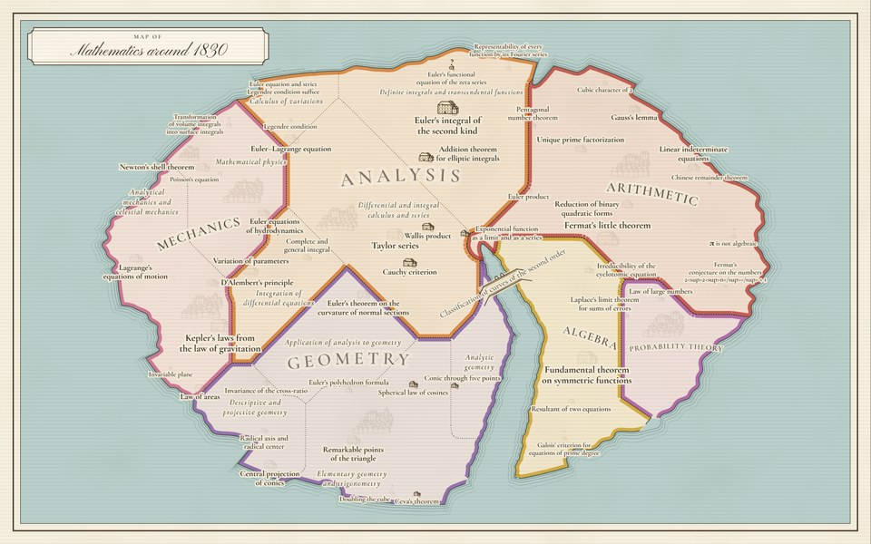
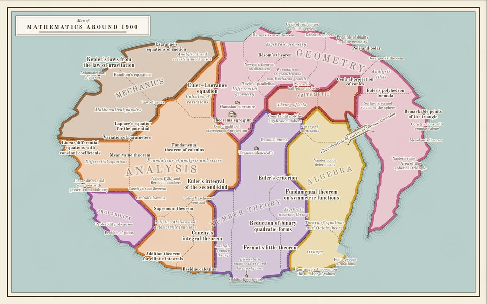
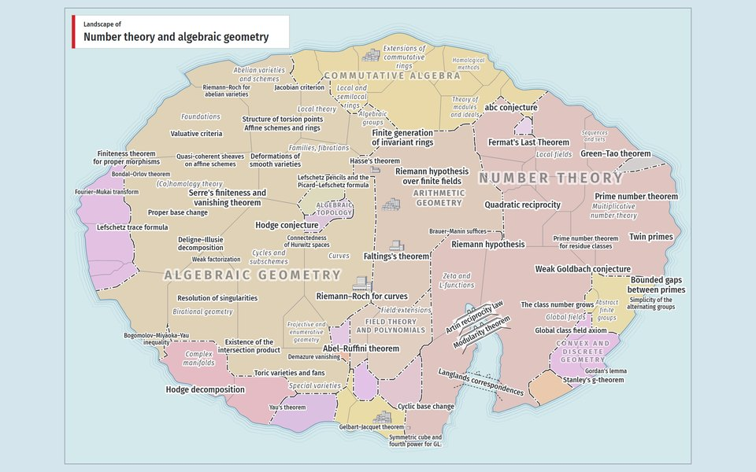
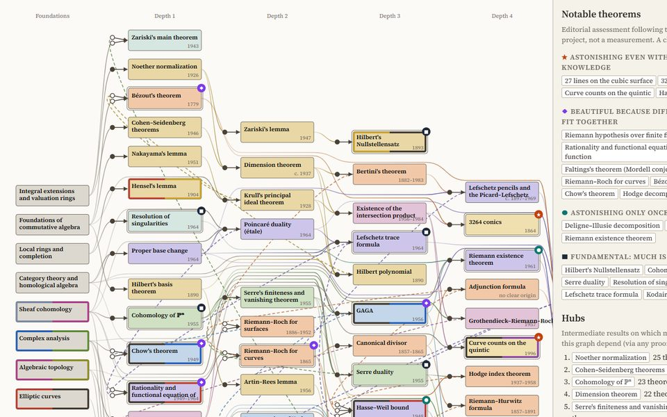
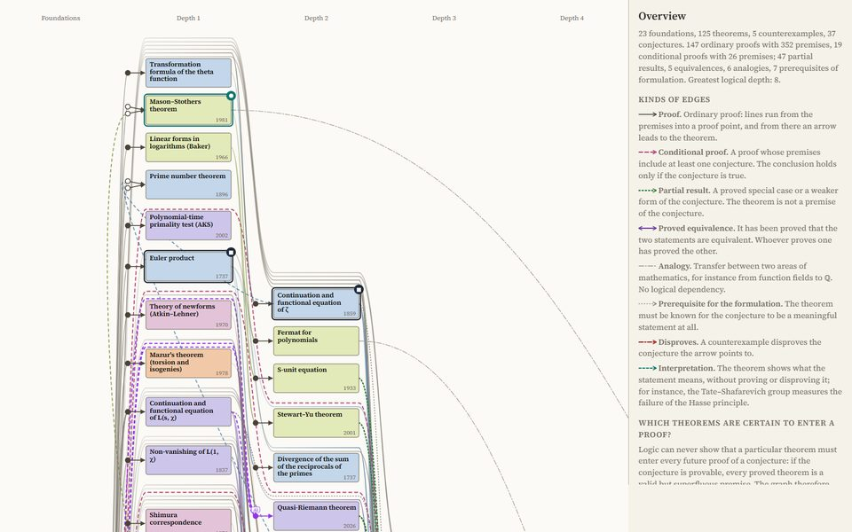

Mathematics
Interactive pages: a map of mathematical areas, tableaus of formulas and graphs of theorems.
Maps

Map
Mathematics around 1830
The mathematics known around 1830, drawn in the style of an eighteenth-century map.

Map
Mathematics around 1900
The mathematics known around 1900, drawn in the style of a nineteenth-century map.

Map
Mathematics around 2020
(mainly number theory and algebraic geometry)
Theorems and conjectures of number theory and algebraic geometry.
Tableaus
Theorem graphs

Theorem graph
Theorems of Algebraic Geometry
Central theorems of algebraic geometry with their proofs as a graph, ordered by logical depth; also as a graph of concepts and as a graph of concepts and theorems.

Theorem graph
Theorems and Conjectures of Arithmetic Geometry
Proved theorems and open conjectures around the Riemann hypothesis, the Birch and Swinnerton-Dyer conjecture and the abc conjecture, with conditional proofs and their relations.